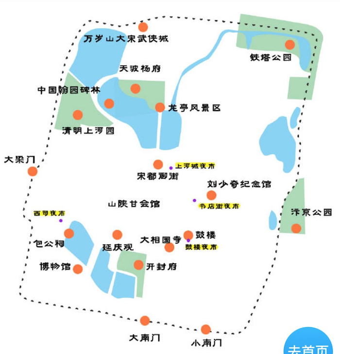
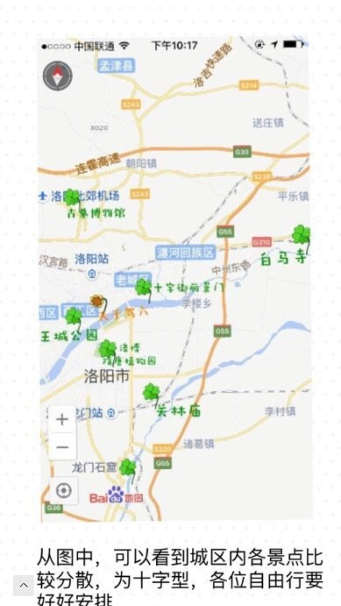

开封
如何前往
北京 -> 郑州（2020.01.01 早上05:40 到达）
郑州出发去开封很便利，城际铁路（郑州东站，乘车舒适方便）、城际公交、大巴、火车（老是晚点）
tips
清明上河园晚上有大宋东京梦华表演，买演出票免门票，需要提前去景区买票，让售票员找个好位子
吃货攻略
鼓楼夜市的羊肉炕膜
黄家灌汤包
书店街大梁包子铺、四味菜
风干兔肉
白吉馍比较薄
烧饼芝麻多，可以自己夹羊肉串
安利景点
鼓楼夜市(商业气息太重，但胜在漂亮)
西司夜市(本地人喜欢的夜市)
清明上河园（5A，9点到12点上午场，13点半到16点半下午场）
大宋武侠城（4A，下午场14点到17点半，必看《三打祝家庄》10:50-11:20/16:55-17:25）
开封府(4A，门票60，需现金)
包公祠(4A)
大宋御河（售票处在包公祠旁）
大相国寺（4A，皇家寺庙，一小时)
龙亭(六朝皇宫)
开封博物馆
路线
1.1日早上预计7点10分到开封站
开封站（7点10分） - 吃早餐 （7点40分）- 办理入住 （9点） - 大宋武侠城（10点-14点）- 清明上河园（14点半-18点半）- 西司夜市（19点-20点）- 鼓楼夜市
1.2日早上在书店街吃过早餐玩一下周边的大相国寺，开封府，下午去洛阳
住宿
开封古城青年旅社 离西司夜市800m，清明上河园1.1km，距包公祠1.1km，距开封府1.8km，鼓楼夜市2.2km，距离开封火车站4.8km
感觉住在书店街和鼓楼夜市会比较方便
洛阳

如何前往
K1363 - 北京西(22：06) -> 洛阳(07：44)
12月31日晚上出发，1月1日早可到洛阳站
替补方案：郑州去洛阳还是很方便的
tips
龙门石窟最好有体力的时候爬
吃货攻略
洛阳水席（洛阳美食里名气最大）
羊肉汤、牛肉汤、洛阳锅贴、不翻汤、烫面角
去洛阳小吃一条街老城十字街边走边逛边吃，总有惊奇的发现
喝汤！
安利景点
龙门石窟（民族隗宝，虽然被破坏依然引人入胜）
白马寺、重渡沟（游山玩水农家乐）
八角楼金街（老城十字街，小吃云集之地）
开元湖音乐喷泉（曾经的亚洲之最）
洛河（晚上沿着河边散步也是挺美的）
隋唐植物园
神州牡丹园
安利路线
龙门石窟 - 关林庙
洛阳博物馆 - 开元湖音乐喷泉
王城公园 - 周天子博物馆 - 应天门
明堂天堂 - 丽景门 - 洛邑古城
白马寺 - 丽景门 - 老城十字街 - 隋唐遗址公园
住宿
洛龙区（首推：离高铁火车站近，离各大景点如龙门石窟近，市政府所在地比较安全）
老城区（次选：吃水席所在地，较有老城氛围，晚上黑不那么方便）